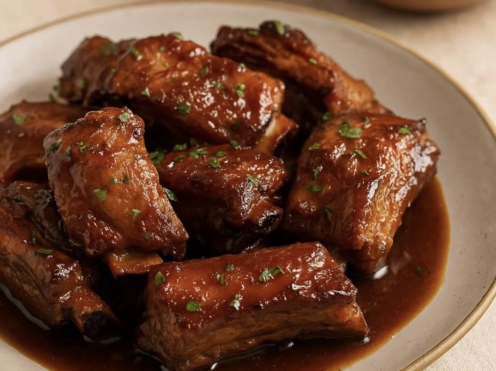

Ingredientes
-
210g de manteiga
-
250g de açúcar mascavo
-
120g de açúcar refinado
-
2 ovos
-
1 colher de sopa de extrado de baunilha
-
380g de farinha
-
1 colher de chá de fermento
-
1/2 colher de chá de bicarbonato de sódio
-
3g de sal refinado
-
250g de chocolate 70% picado ou em gotas
Preparo
-
Dourar a manteiga em fogo baixo mexendo incessantemente.
-
Resfriar ela até endurecer novamente, depois de resfriada bater até ficar clara.
-
Acrescentar o açúcar mascavo e o refinado e agitar durante 2-3 minutos.
-
Adicionar os ovos, e o extrato de baunilha e bater até incorporar tudo.
-
Incluir a farinha, o fermento, o bicarbonato e o sal e misturar até ficar homogêneo.
-
Juntar o chocolate à massa e mexer.
-
Descansar a massa na geladeira por 24 horas.
-
Formar bolinhas com a massa e congelar por 12 horas.
-
Retirar as bolinhas do congelador e assar em um forno pré aquecido a 220° C até ficar dourado.
Você também pode gostar


